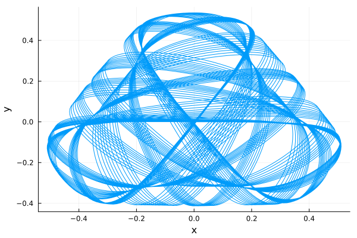
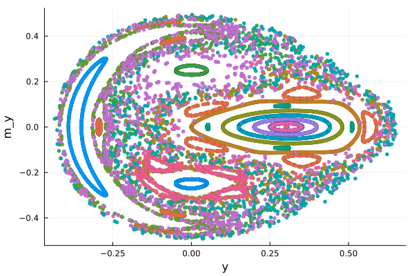

The AbstractModel framework allows users to define land component models (e.g. for snow, soil, vegetation, carbon...) which can be run in standalone mode, or as part of a land surface model with many components. In order to achieve this flexibility, we require a standard interface, which is what AbstractModels provides. The interface is designed to work with an external package for the time-stepping of ODEs - we are using DifferentialEquations.jl at present - , with ClimaCore.jl, for the spatial discretization of PDEs, and with ClimaLSM.jl, for designing and running multi-component land surface models. For a developer of a new land model component, using AbstractModels as shown below is the first step towards building a model which can be run in standalone or with ClimaLSM.jl.
This tutorial introduces some of the functionality of the AbstractModel interface functions and types. We demonstrate how to use a Model <: AbstractModel structure to define a set of equations, and explain a few core methods which must be defined for your Model type in order to run a simulation. We use a non-land modelling system of ODEs for this purpose, to demonstrate generality. For land model components, you would follow the same principles - see the carbon tutorial for a similar example.
Future tutorials (TBD where) will show to define simple land component models and run them together using ClimaLSM.jl.
General setup
We assume you are solving a system of the form of a set of PDEs or ODEs. Additional algebraic equations for can be accomodated as well, but only in addition to variables advanced using differential equations.
Spatially discretized PDEs reduce to a system of ODEs, so we can assume an ODE system in what follows without a loss of generality. When using AbstractModels, you should use ClimaCore to discretize your PDE, as applicable.
Your model defines a system of equations of the following form:
$\frac{d \vec{Y}}{d t} = \vec{f}(\vec{Y}, \vec{x}, t; \mbox{params} \ldots)$
The variables that are stepped forward via a differential equation are referred to as prognostic variables, and are stored in $\vec{Y}$. Generically, we will speak of the functions $\vec{f}$ as the right hand side functions; these can be functions of the prognostic state, of space $\vec{x}$, and of time $t$, as well as of other parameters. Note that quantities such as boundary conditions, source terms, etc, will appear within these right hand side functions.
Optional auxiliary variables
It may be that there are quantities, which depend on the state vector $\vec{Y}$, location, time, and other parameters, which are expensive to compute (e.g. requiring solving an implicit equation) and also needed multiple times in the right hand side functions.
Denoting these variables as $\vec{p}$, your equations may be rewritten as:
$\frac{d \vec{Y}}{d t} = \vec{f}(\vec{Y}, \vec{p}, \vec{x}, t; \mbox{params} \ldots)$
$\vec{p}(\vec{x}, t) = \vec{g}(\vec{Y}(t), \vec{x}, t; \mbox{params} \ldots)$
The variables $\vec{p}$ at the current timestep are functions of the state, space, time, and parameters. These variables are referred to as auxiliary variables (TBD: or cache variables). Their only purpose is for storing the value of a quantity in a pre-allocated spot in memory, to avoid computing something expensive many times per time-step, or to avoid allocating memory to store each timestep. They are not a required feature, strictly speaking, and should be only used for this particular use case. A model purely consisting of algebraic equations, running in standalone mode, is not supported ($\vec{Y}$ cannot be zero dimensional).
In order to define this set of equations, in a manner which is consistent with the AbstractModel interface (used by ClimaLSM.jl) and time-stepping algorithms (OrdinaryDiffEq.jl for the present), the following must be provided.
The Model
All ClimaLSM component models are concrete instances of AbstractModels. The reason for grouping them in such a way is because they all have shared required functionality, as we will see, and can make use of common default behavior.
The model structure holds all of the information needed to create the full right hand side function, including parameters (which can be functions of space and time), boundary conditions, and physical equations.
The purpose of our AbstractModel interface is that it allows you to run land component models in standalone mode and in an LSM mode without a change in interface. However, we can still use this system to show how to set up a model, equations, etc.
As a simple demonstration of use, we'll build a model now which describes the motion of a particle in the Henon-Heiles potential. This decribes a particle moving on a plane under a cubic potential energy function, and is a problem of historical and scientific interest as an example of a system exhibiting Hamiltonian chaos. To be clear, if you only want to integrate a system like this, you should not be using our AbstractModels interface, and working with OrdinaryDiffEq.jl directly!
Let's first import some needed packages.
using OrdinaryDiffEq: ODEProblem, solve, RK4
using SciMLBase
using Plots
using ClimaCore
if !("." in LOAD_PATH)
push!(LOAD_PATH, ".")
end
using ClimaLSM
using ClimaLSM.DomainsImport the functions we are extending for our model:
import ClimaLSM: name, make_rhs, prognostic_vars, prognostic_types
import ClimaLSM.Domains: coordinatesThere is only one free parameter in the model, λ, so our model structure is very simple. Remember, the model should contain everything you need to create the right hand side function.
struct HenonHeiles{FT} <: AbstractModel{FT}
λ::FT
end;For reasons we will discuss momentarily, let's also define the name of the model:
ClimaLSM.name(model::HenonHeiles) = :hh;Right hand side function
Here is where we need to specify the equations of motion. The prognostic variables for the Henon-Heiles system consist of two position variables (x, y), and two momentum variables (m_x, m_y, where we are using m rather than p as is typical to avoid confusion with the auxiliary vector p). The differential equations are:
$\dot{x} = m_x$
$\dot{y} = m_y$
$\dot{m}_x = -x -2 λ xy$
$\dot{m}_y = -y - λ (x² - y²)$
These equations describe Newton's 2nd law for the particle, where the force acting is minus the gradient of the potential function (the aforementioned cubic); they are derived by taking the appropriate derivatives of the Hamiltonian (in this case, total energy) function.
We now create the function which makes the rhs! function:
function ClimaLSM.make_rhs(model::HenonHeiles{FT}) where {FT}
function rhs!(dY, Y, p, t)
dY.hh.x[1] = Y.hh.m[1]
dY.hh.x[2] = Y.hh.m[2]
dY.hh.m[1] = -Y.hh.x[1] - FT(2) * model.λ * Y.hh.x[1] * Y.hh.x[2]
dY.hh.m[2] = -Y.hh.x[2] - model.λ * (Y.hh.x[1]^FT(2) - Y.hh.x[2]^FT(2))
end
return rhs!
end;A couple of notes: the vector $\vec{dY}$ contains the evaluation of the right hand side function for each variable in $\vec{Y}$. It is updated in place (so no extra allocations are needed). Note that both vectors are not simple arrays. They are ClimaCore FieldVectors, which allow us to impose some organizational structure on the state while still behaving like arrays in some ways. We use the symbol returned by name(model) to create this hierarchy. There will ever only be one level to the hierarchy.
The arguments of rhs! are determined by the OrdinaryDiffEq interface, but should be fairly generic for any time-stepping algorithm. The rhs! function is only created once. If there are time-varying forcing terms appearing, for example, the forcing functions must be stored in model and passed in that way.
The state vectors $\vec{Y}$ and $\vec{p}$
We have given the state vector $\vec{Y}$ a particular structure, and don't expect the user to build this themselves. In order to have the structure Y (and p) correctly created, the model developer needs to define the names of the prognostic and auxiliary variables:
ClimaLSM.prognostic_vars(::HenonHeiles) = (:x, :m);There are no auxiliary variables. By not defining a method for them, we are using the default (which adds no variables to p), i.e. ClimaLSM.auxiliary_vars(::HenonHeiles) = ().
Lastly, we need to tell the interface something about the variables. What are they? Arrays? ClimaCore Fields? We have made the assumption that all variables are tied to a domain, or a set of coordinates.
In this case, our coordinates are 2-d. Hence our coordinates are given by a vector with 2 elements. For each coordinate, both m and x are scalars with type FT:
ClimaLSM.Domains.coordinates(model::HenonHeiles{FT}) where {FT} =
FT.([0.0, 0.0]);
ClimaLSM.prognostic_types(::HenonHeiles{FT}) where {FT} = (FT, FT);OK, let's try running a simulation now. Create a model instance, with λ = 1:
hh = HenonHeiles{Float64}(1.0);Create the initial state structure, using the default method:
Y, p, _ = initialize(hh);Note that Y has the structure we planned on in our rhs! function, for x,
Y.hh.x2-element Vector{Float64}:
0.0
0.0and for m
Y.hh.m2-element Vector{Float64}:
0.0
0.0Note also that p is empty:
p.hhFloat64[]Here we now update Y in place with initial conditions of our choosing.
Y.hh.x[1] = 0.0;
Y.hh.x[2] = 0.0;
Y.hh.m[1] = 0.5;
Y.hh.m[2] = 0.0;Running the simulation
Create the ode_function. In our case, since we don't have any auxiliary variables to update each timestep, this is equivalent to the rhs! function, but in other models, it might involve an update_aux! step as well.
ode_function! = make_ode_function(hh);From here on out, we are just using OrdinaryDiffEq.jl functions to integrate the system forward in time.
Initial and end times, timestep:
t0 = 0.0;
tf = 600.0;
dt = 1.0;ODE.jl problem statement:
prob = ODEProblem(ode_function!, Y, (t0, tf), p);Solve command - we are using a fourth order Runge-Kutta timestepping scheme. ODE.jl uses adaptive timestepping, but we can still pass in a suggested timestep dt.
sol = solve(prob, RK4(); dt = dt, reltol = 1e-6, abstol = 1e-6);Get the solution back, and make a plot.
x = [sol.u[k].hh.x[1] for k in 1:1:length(sol.t)]
y = [sol.u[k].hh.x[2] for k in 1:1:length(sol.t)]
plot(x, y, xlabel = "x", ylabel = "y", label = "");
savefig("orbits.png");
And, yes, we could be using a symplectic integrator, but that would require us to use a slightly different interface - and that isn't needed for our Clima LSM application.
And now for some bonus material
The motion of the system takes place in four dimensions, but it's hard for us to visualize. One nice way of doing so is via a Poincare section, or surface of section. The idea is that for quasiperiodic motion, which Hamiltonian dynamics result in, the orbit will repeatedly meet certain criteria, and we can look at the orbit variables when that criterion is met.
For example, we can define our surface of section to be $x = 0, \dot{x} > 0$, since x is varying periodically and repeatedly passes through zero in the positive direction. We also will only look at orbits with a particular energy value, $E_0$.
Every time the section criterion is met, we plot $(y, m_y)$. Points on this surface provide a complete description of the orbit, because we can, with knowledge of $x = 0, m_x >0,$ and $E_0$, back out the state of the system, which uniquely defines the orbit we are looking at.
The functions below creates these initial conditions, given a value for E, λ, and y (setting $m_y = 0$ arbitrarily):
function set_ic_via_y!(Y, E, λ, y; my = 0.0, x = 0.0)
twiceV = λ * (x^2 + y^2 + 2 * x^2 * y - 2 / 3 * y^3)
mx = sqrt(2.0 * E - my^2 - twiceV)
Y.hh.x[1] = x
Y.hh.x[2] = y
Y.hh.m[1] = mx
Y.hh.m[2] = my
end;This function creates similar initial conditions, but via $m_y$ :
function set_ic_via_my!(Y, E, λ, my; y = 0.0, x = 0.0)
twiceV = λ * (x^2 + y^2 + 2 * x^2 * y - 2 / 3 * y^3)
mx = sqrt(2.0 * E - my^2 - twiceV)
Y.hh.x[1] = x
Y.hh.x[2] = y
Y.hh.m[1] = mx
Y.hh.m[2] = my
end;This function takes initial conditions, runs an integration, and saves the values of the state on the surface of section, and then plots those points (thanks to the SciML team for creating a tutorial showing how to extract the state of the system when the section criterion is met.
function map(Y, pl)
t0 = 0.0
tf = 4800.0
dt = 1.0
condition(u, t, integrator) = u.hh.x[1]
affect!(integrator) = nothing
cb = ContinuousCallback(
condition,
affect!,
nothing,
save_positions = (true, false),
)
prob = ODEProblem(ode_function!, Y, (t0, tf), p)
sol = solve(
prob,
RK4();
dt = dt,
reltol = 1e-6,
abstol = 1e-6,
callback = cb,
save_everystep = false,
save_start = false,
save_end = false,
)
y_section = [sol.u[k].hh.x[2] for k in 1:1:length(sol.t)]
my_section = [sol.u[k].hh.m[2] for k in 1:1:length(sol.t)]
scatter!(pl, y_section, my_section, label = "", markersize = 3, msw = 0)
end;Ok! Let's try it out:
E = 0.125;
yvals = -0.35:0.05:0.35;
pl = scatter();
for yval in yvals
set_ic_via_y!(Y, E, 1.0, yval)
map(Y, pl)
end;
myvals = [-0.42, -0.27, 0.05, 0.27, 0.42];
for myval in myvals
set_ic_via_my!(Y, E, 1.0, myval)
map(Y, pl)
end;
plot(pl, xlabel = "y", ylabel = "m_y");
savefig("surface.png");
On a plot like this, a single orbit (indicated via point color) can be identified roughly as regular, or periodic, if it the points lie on a curve. Orbits which are chaotic fill out an area (orbits with a lot of numerical error also do...). The coexistence of these orbits arbitrarily close to each other, in the same system, is one fascinating aspect of deterministic chaos. Another fun aspect is seeing periodic orbits of different resonances. The set of cocentric curves are near a first-order resonance, meaning that every period for x (to reach zero), we see about one period in y,my space. The teal circles around them indicate a near resonant orbit of order 4.
This page was generated using Literate.jl.